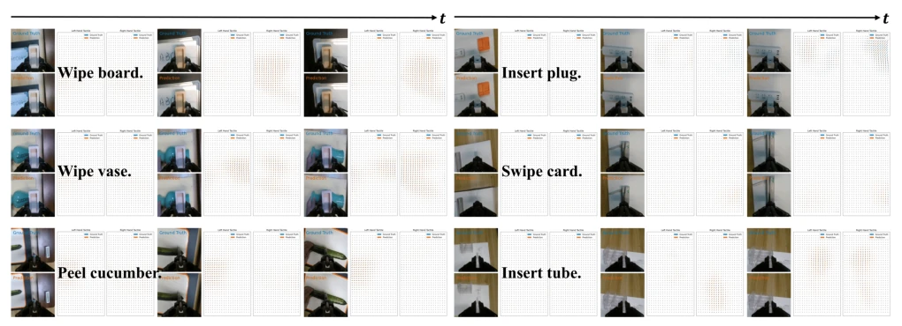

Fig. 1. Sparse tactile dynamics provide decisive evidence for contact- rich manipulation. (a) Across six real-world tasks, tactile responses appear mainly around short contact events, making the informative signal tem- porally sparse. (b) By coupling action prediction with tactile deformation dynamics, VT-WAM improves the average success rate from 45.00% with Fast-WAM to 71.67%, with consistent gains on both surface-interaction and constrained insertion tasks.
Fig. 2. Overview of VT-WAM. (a) Joint visual-tactile-action flow matching with three modality-specific experts connected by Asymmetric MoT Attention. (b) Attention masks in Asymmetric MoT Attention during training and inference. (c) Contact-gated AVTAG applies a training-only hinge ranking loss that encourages action queries to prioritize tactile evidence during contact phases.
Fig. 4. Overview of real-world contact-rich manipulation tasks. We evaluate VT-WAM on six real-world tasks covering two interaction regimes: surface-interaction tasks and constrained insertion tasks.

Fig. 5. Visual-Tactile Prediction Results across Six Tasks. For visualization, VT-WAM predicts wrist camera observations together with tactile deformation fields. Blue denotes ground truth, and orange indicates prediction.